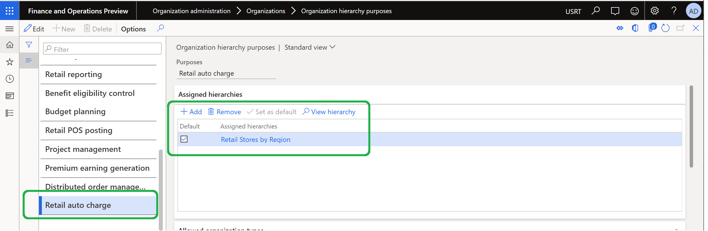
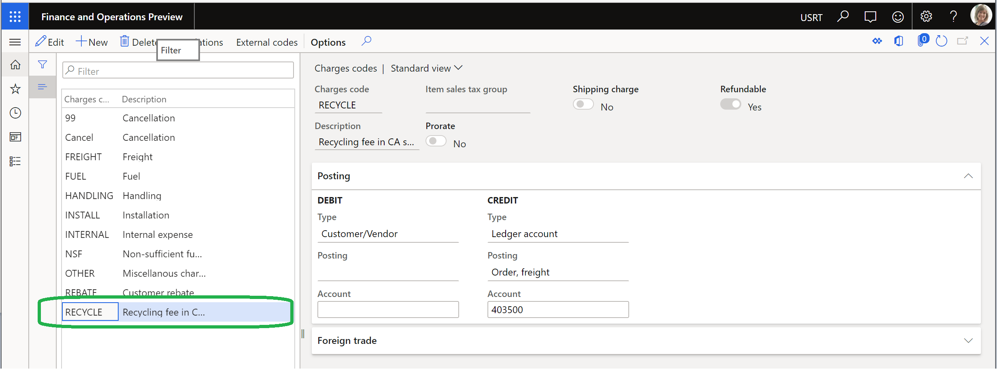

Enable and configure auto charges by channel
This topic explains how to enable and configure automatic charges (auto charges) by channel in Microsoft Dynamics 365 Commerce.
Overview
You might have scenarios where recycling fees or other fees must be applied to a group of products that are sold in all or some stores in a specific state (for example, California). The Enable filter auto charges by channel feature in Commerce lets you specify auto charges by channel (for example, a specific brick-and-mortar channel). This feature is available in Dynamics 365 Commerce version 10.0.10 and later.
To enable and configure auto charges by channel, you must complete the following tasks:
- Turn on the Enable filter auto charges by channel feature.
- Configure the organization hierarchy purpose.
- Define auto charges by channel.
Note
The Enable filter auto charges by channel feature works only if the advanced auto charges feature is also turned on. For information about how to turn on the advanced auto charges feature, see Omni-channel advanced auto charges.
Turn on the Enable filter auto charges by channel feature
To enable auto charges by channel in Commerce, follow these steps.
- Go to System administrator > Workspaces > Feature management.
- On the Not enabled tab, in the Feature name list, find and select Enable filter auto charges by channel.
- In the lower-right corner, select Enable now. After the feature has been turned on, it will appear in the list on the All tab.
- Go to Retail and Commerce > Retail and Commerce IT > Distribution schedule.
- In the left pane, find and select the 1110 (Global configuration) job.
- On the Action Pane, select Run now to propagate the configuration changes.
Warning
If you turn off the Enable filter auto charges by channel feature after you've already used it, the Retail channel relation field under Auto charges will no longer appear, and you will lose all existing configurations. If removal of the Retail channel relation configurations will cause auto charges rules to be duplicated, an attempt to turn off the feature will fail. Before you turn off the feature, be sure to review all auto charges rules and make any required changes.
Configure the organization hierarchy purpose
A new organization hierarchy purpose that is named Retail auto charge has been created to manage the hierarchy for auto charges by channel.
To assign a default hierarchy to an organization hierarchy purpose in Commerce, follow these steps.
- Go to Organization administration > Organizations > Organization hierarchy purposes.
- In the left pane, select Retail auto charge.
- Under Assigned hierarchies, select Add.
- In the Organization hierarchies dialog box, select an organization hierarchy (for example, Retail Stores by Region), and then select OK.
- Under Assigned hierarchies, select Set as default.
- Go to Retail and Commerce > Retail and Commerce IT > Distribution schedule.
- In the left pane, find and select the 1040 (Products) job.
- On the Action Pane, select Run now.
- Repeat the previous two steps to run the 1070 (Channel configuration) and 1110 (Global configuration) jobs.

Define auto charges by channel
After you've turned on the Enable filter auto charges by channel feature and configured the Retail auto charge organization hierarchy purpose, auto charges by channel can be defined at either the order header level or the order line level.
To define auto charges by channel in Commerce, follow these steps.
Go to Accounts receivable > Charges setup > Auto charges.
In the left pane, in the Level field, select either Header or Line, depending on your business requirements.
In the Retail channel code field, select the appropriate channel code (for example, Table or Group). If the default setting, All, is used, charge rules are applied to all channels.
- If you select Group, make sure that a retail channel charges group is created at Retail and Commerce > Channel setup > Charges > Retail channel charge groups.
- If you select Table, you can select a specific channel (for example, San Francisco) in the Retail channel relation field.
Go to Retail and Commerce > Retail and Commerce IT > Distribution schedule.
In the left pane, find and select the 1040 (Products) job.
On the Action Pane, select Run now.
Repeat the previous two steps to run the 1070 (Channel configuration) and 1110 (Global configuration) jobs.

Example scenario
The following example outlines the steps that are required to configure a product so that recycling fees are charged when the product is sold through a San Francisco brick-and-mortar channel. The example also shows how the auto charges appear in the Commerce point of sale (POS) application.
The organization defines a charges code that is named RECYCLE, as shown in the following illustration.

An auto charge is created at the line level. It has the following configuration:
- The Account code field is set to All.
- The Item code field is set to Table.
- The Item relation field is set to product ID 91001.
- The Mode of delivery code field is set to All.
- The Retail channel code field is set to Table.
- The Retail channel relation field is set to the San Francisco store.
An auto charges line is created. It has the following configuration:
- The Currency field is set to USD.
- The Charges code field is set to RECYCLE.
- The Category field is set to Fixed.
- The Charges field is set to $6.25.

In the POS application, a sales order is created in the San Francisco store channel. The Charges line shows the recycling fee of $6.25.
By selecting Transaction options > Charges > Manage charges in the POS application, you can view the charges code and description for the recycling fee.